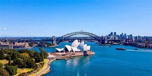
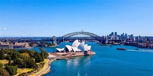

Amsterdam is de hoofdstad van Nederland. De gemeente Amsterdam is naar inwonertal de grootste gemeente. De stad, in het Amsterdams ook Mokum genoemd, ligt in de provincie Noord-Holland, aan het IJ, het Noordzeekanaal en de monding van de Amstel. De gemeente Amsterdam telt 869.709 inwoners. Groot-Amsterdam telde eind 2016 1.344.659 inwoners. Het aantal verschillende nationaliteiten in de gemeente behoort tot het hoogste ter wereld. Amsterdam dankt zijn naam aan de ligging bij een in de 13e eeuw aangelegde dam in de Amstel. De plaats kreeg kort na 1300 stadsrechten, werd in 1345 door het Mirakel van Amsterdam een pelgrimsoord en groeide in de Gouden Eeuw uit tot een van de belangrijkste haven- en handelssteden ter wereld. Een toestroom van buitenlanders uit vooral de Zuidelijke Nederlanden, Duitsland en de Scandinavische landen leidde vanaf het eind van de 16e eeuw tot stadsuitbreidingen, waaronder de laatste grachten van de fortificatie die nu als grachtengordel bekend is en in 2010 is toegevoegd aan de Werelderfgoedlijst van UNESCO. Bezienswaardigheden en attracties in Amsterdam zijn het Rijksmuseum, het Stedelijk Museum, het Van Gogh Museum en Het Scheepvaartmuseum, het Anne Frank Huis, het Concertgebouw, Muziekgebouw aan 't IJ en EYE Filmmuseum, dierentuin Artis, de Wallen, de coffeeshops en de Johan Cruijff ArenA. De stad telt twee universiteiten en meerdere hogescholen.
 

Sydney is de grootste en oudste stad in Australië en de hoofdstad van de deelstaat Nieuw-Zuid-Wales. Op 1 januari 2013 telde Sydney 4.757.083 inwoners. De agglomeratie is de grootste van Oceanië. Sydney ligt aan de Tasmanzee, in het zuidoosten van Australië. De stad heeft zich ontwikkeld vanuit de natuurlijke haven Port Jackson, waar zich vandaag de dag het Sydney Opera House en de Sydney Harbour Bridge – twee iconen van de stad – bevinden. Tegenwoordig strekt de stad zich verder uit en grenst ze enerzijds aan berg- en heuvelachtig landschap in het binnenland en anderzijds aan de kustlijn van de Grote Oceaan. Sinds de stichting in 1788 is Sydney uitgegroeid tot een zowel nationaal als internationaal belangrijke stad op economisch en cultureel gebied. De stad organiseerde de Olympische Zomerspelen 2000 en was in 2008 gastheer van de Wereldjongerendagen. Sydney Airport is de drukste luchthaven van het land.

Washington D.C. is de hoofdstad van de Verenigde Staten. "D.C." staat voor "District of Columbia", het speciale federale district dat sinds de jaren 1870 hetzelfde grondgebied bestrijkt en er min of meer synoniem mee is. Het District of Columbia is vernoemd naar een oude, poëtische naam voor de Verenigde Staten: Columbia (op zijn beurt afgeleid van Columbus). Dit district behoort tot geen enkele staat, omdat men niet wilde dat een staat invloed op de hoofdstad kon uitoefenen. Gevolg daarvan is dat de inwoners van D.C. niet deelnemen aan de verkiezingen van het Amerikaanse Congres, want dat vertegenwoordigt immers de staten. Wel nemen ze deel aan de presidentsverkiezingen. Om verwarring met de staat Washington te voorkomen spreken de Amerikanen veelal niet van Washington, maar van Washington, D.C., of kortweg D.C. De stad is net als de staat genoemd naar de eerste president van de VS, George Washington, en ligt aan de rivier de Potomac. Sinds de jaren 1970 heeft de stad (opnieuw) zelfbestuur met een burgemeester en een gekozen gemeenteraad. Washington D.C. is als hoofdstad ontworpen, een zogeheten geplande stad. Het oorspronkelijke plan van indeling laat de scheiding der machten (de Trias politica) goed zien: het Washington Monument vormt het middelpunt van een half kruis. Aan het uiteinde van de noordelijke poot van het kruis bevindt zich het Witte Huis, waar de president, als hoofd van de uitvoerende macht, zetelt, en aan het uiteinde van de oostelijke poot bevindt zich het Capitool, waar de wetgevende macht is gevestigd. Tegenwoordig is Washington D.C. maar een klein deel van het stedelijke gebied dat hier ligt; de vele uitbreidingen van regeringsgebouwen en woongebieden bevinden zich in de aangrenzende staten, Virginia en Maryland. Ook het militaire centrum het Pentagon bevindt zich in de staat Virginia. Het gehele stedelijke gebied heeft een inwonertal van meer dan 5,9 miljoen; Washington D.C. zelf telde in 2019 705.749 inwoners.


Tokio of Tokyo is een van de 47 prefecturen of provincies van Japan. De naam 東京 wordt bij transcriptie volgens het gangbare Hepburnsysteem meestal gespeld als Tōkyō (Geluidsfragment uitspraak Japans en betekent letterlijk: "Oostelijke hoofdstad". Officieel gebruikt men ook de naam 東京都, ofwel Tōkyō-to, en dat betekent metropool Tokio of prefectuur Tokio. Alle 23 speciale wijken van Tokio worden als een aparte stad bestuurd en samen beslaan ze het gebied van de historische stad Tokio, ofwel 東京市, (Tōkyō-shi). Binnen deze zone woonden medio 2012 meer dan 8,7 miljoen inwoners. De totale bevolking van de prefectuur Tokio bedroeg op 1 juli 2012 meer dan 13,2 miljoen inwoners. De prefectuur Tokio vormt het centrum van de agglomeratie Groot-Tokio, de op 1 na grootste metropool van de wereld met, afhankelijk van de meetwijze, tussen de 32 en 36 miljoen inwoners. Tokio is sinds 1868 de facto de hoofdstad van Japan. De stad wordt als hoofdstad beschouwd omdat de regering er zetelt en omdat het keizerlijk paleis er staat en de Japanse keizerlijke familie er domicilie houdt.

Moskou is de hoofdstad en grootste stad van Rusland. De stad ligt aan de rivier de Moskva in Centraal-Rusland, met een bevolking die binnen de stadsgrenzen wordt geschat op 12,4 miljoen inwoners, terwijl meer dan 17 miljoen inwoners in het stedelijk gebied en meer dan 20 miljoen inwoners in het grootstedelijk gebied van Moskou wonen. De stad heeft een oppervlakte van 2.511 vierkante kilometer (970 vierkante mijl), terwijl het stedelijk gebied 5.891 vierkante kilometer (2.275 vierkante mijl) beslaat, en het grootstedelijk gebied meer dan 26.000 vierkante kilometer (10.000 vierkante mijl) beslaat. Moskou is een van 's werelds grootste steden, zijnde de meest bevolkte stad volledig binnen Europa, het dichtstbevolkte stedelijke gebied van Europa, het dichtstbevolkte grootstedelijke gebied van Europa, en ook de grootste stad per land op de Europese continent. Moskou, oorspronkelijk opgericht in 1147 als een kleine stad, groeide uit tot een welvarende en machtige stad die diende als de hoofdstad van het Groothertogdom dat zijn naamgenoot draagt. Toen het Groothertogdom Moskou uitgroeide tot het Tsaardom van Rusland, bleef Moskou nog steeds het politieke en economische centrum voor het grootste deel van de geschiedenis van de Tsaardom. Toen de Tsaardom werd omgevormd tot het Russische rijk, werd de hoofdstad verplaatst van Moskou naar Sint-Petersburg, waardoor de invloed van de stad afnam. De hoofdstad werd vervolgens teruggebracht naar Moskou na de Russische revolutie en de stad werd teruggebracht als het politieke centrum van de Russische SFSR en de Sovjet-Unie. Toen de Sovjet-Unie uiteenviel, bleef Moskou de hoofdstad van de hedendaagse en nieuw opgerichte Russische Federatie.

Dubai, uitgesproken en ook wel geschreven als Doebai is een van de Verenigde Arabische Emiraten (VAE). De hoofdstad is het gelijknamige Dubai. Al vele eeuwen geleden woonden in dit gebied mensen. Opgravingen toonden aan dat dat al in de Bronstijd het geval was. Ook zijn de funderingen van oude forten uit de periode rond 600 gevonden. Begin 1800 trok een tak van een stam met circa 600 personen uit het zuiden dit gebied binnen en vestigde zich rond de kreek. Een andere tak van deze stam vestigde zich in Abu Dhabi en de leiders van deze stam zijn de voorouders van de huidige sjeiks. De bevolking was veelal in de handel, veeteelt, visserij en het parelduiken actief. De huizen waren primitief en gemaakt van hout en modder. Rond 1850 woonden er in het emiraat 8.000 mensen.